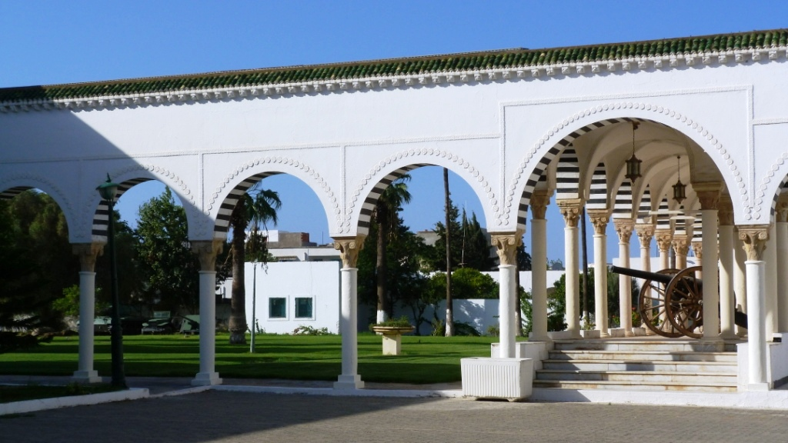

Manouba la ville des jardins et des vergers
La Manouba est une ville et un gouvernorat tunisien situé dans la périphérie ouest de la capitale, Tunis. C'est une région dynamique, souvent considérée comme une extension résidentielle et universitaire du Grand Tunis.
La ville de La Manouba est le chef-lieu du Gouvernorat de la Manouba. Elle fait partie du Grand Tunis et se trouve à environ 7 kilomètres au nord-ouest de la capitale.
L'histoire de La Manouba est marquée par son rôle de lieu de résidence privilégié pour l'aristocratie beylicale et son importance stratégique au fil des siècles. La région présente un mélange captivant de patrimoine culturel et de modernité.
Situé dans le magnifique Palais de la rose (ancien palais beylical El Warda) sur l'avenue Habib Bourguiba, ce musée est l'attraction principale de La Manouba. Il retrace l'histoire militaire de la Tunisie de l'Antiquité à nos jours et expose près de 25 000 objets. L'architecture du palais lui-même vaut le détour.
